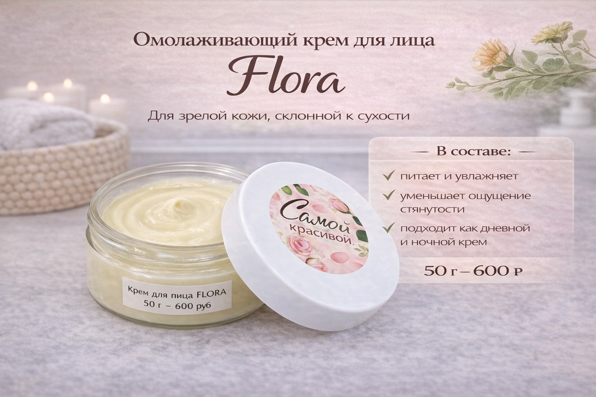

Уход, который подстраивается под задачу кожи и не заставляет гадать, с чего начать.
«Мелодия природы» — камерная мастерская Юлии. Кремы, бальзамы, тоники, гидролаты и уход после бритья собраны так, чтобы выбор не превращался в угадывание: сначала задача кожи, потом направление ухода, а уже затем конкретная формула.

Если не хочется начинать с баночки наугад, удобнее сперва открыть направления ухода: там быстрее видно, где питание, где баланс, где водный этап и где локальное восстановление.
Сайт устроен так, чтобы сначала стало ясно, что нужно коже, а уже потом какой формуле довериться.
Сначала здесь выбирают сценарий ухода, затем сравнивают направления и только потом открывают карточку с составом, текстурой и применением или идут к Юлии за более точным подбором.

За брендом стоит личная история, но сам уход здесь объясняется без мифологии и лишних обещаний.
Юлия пришла в кремоварение после долгого поиска ухода для сухой кожи, который действительно приносит комфорт. Со временем личный запрос превратился в систему: малые партии, собственные гидролаты, понятные направления ухода и возможность точного подбора.
«Я делаю уход не ради красивой баночки. Мне важно, чтобы кожа действительно приходила в комфорт».
Так Юлия объясняет подход мастерской.Подбор начинается не с названия средства, а с вопроса: что именно сейчас нужно коже.
Сухость и возрастной дискомфорт, жирный блеск, мужской уход после бритья, тоники и гидролаты, очищение и локальное восстановление разведены по отдельным направлениям, чтобы выбор не строился вслепую по одному только названию.
Здесь держатся на трёх вещах: малые партии, ясный подбор и живой контакт.
Ниже — несколько понятных входных точек, с которых чаще всего начинают знакомство с брендом.
Дальше путь простой: посмотреть, с какой задачей работает средство, открыть подробную карточку и только потом писать Юлии, если нужен более точный подбор.